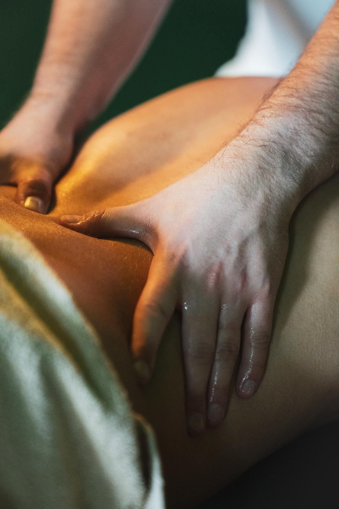

03 — TEPLO
Masáž lávovými kameny v Brně
Teplo, které jde hloub než ruce. Nahřáté kameny prohřejí záda dřív, než se do nich pustím.
- Délka
- 60 / 90 min
- Cena
- od 1 190 Kč
- Tlak
- Nejlépe na
- ztuhlá záda
Proč kameny
Sval, který je teplý, povolí mnohem ochotněji. Kameny tu práci udělají za ruce.
Lávové kameny nejsou hezčí verze klasické masáže. Teplo z nich prostoupí hlouběji a déle než z dlaní, takže masáž nemusí tlačit silou tam, kde stačí počkat, až tělo povolí samo.
Kdy po kamenech sáhnout
Záda ztuhlá jako prkno
U klasické masáže by první půlhodina padla jen na rozehřátí. Kameny ji zkrátí.
Silný tlak nesneseš
Teplo udělá část práce místo tlaku. Masáž zůstane příjemná a přesto zabere.
Je ti pořád zima
Po dni v klimatizované kanceláři tě kameny prohřejí skrz. To se rukama udělat nedá.
Potřebuješ vypnout hlavu
Těžké teplé kameny podél páteře zpomalí dech skoro samy.
Hodina, kterou udělá teplo
- 01
Krátký rozhovor
Kde to drží, co tě bolí a jak snášíš teplo. Podle toho nastavím kameny i tlak.
- 02
Rozehřátí
Začínám rukama a teplým olejem. Kameny se mezitím nahřívají ve vodní lázni.
- 03
Kameny
Teplé kameny položím podél páteře a masíruju jimi záda, šíji i nohy. Teplotu kdykoli ubereme.
- 04
Dojezd
Klidné dokončení rukama, chvíle ležení a čaj. Ze studia se nikam nespěchá.

Kdy raději ne — nebo se nejdřív ozvi
- horečka nebo akutní infekce, první trimestr těhotenství
- čerstvý úraz, operace nebo zánět v místě, kde by ležely kameny
- křečové žíly, kožní onemocnění, onkologická léčba, léky na ředění krve
Nejsem lékař a masáž není léčba. Když si nejsi jistý, napiš mi a řeknu rovnou, jestli má smysl přijít. Celé znění v obchodních podmínkách.
Kdo masíruje
Kameny pokládám vždycky já
Lukáš Václavek, ve studiu masíruju sám. Kdo tě masíroval minule, ví, co tě bolelo.
[DOPLNIT: kurz masáže lávovými kameny]
Na co se ptáš u kamenů
Nepálí kameny?
Nemají. Mají příjemně hřát. Než kámen položím na kůži, vyzkouším ho, a když je ti teplo moc, stačí říct a uberu.
Je masáž s kameny silná?
Spíš ne. Teplo udělá část práce, takže tlak může zůstat příjemný. Sílu ladíme na začátku stejně jako u každé masáže.
60, nebo 90 minut?
Hodina stačí na záda, šíji a nohy. Za devadesát minut je čas na celé tělo a delší ležení s kameny.
Můžu zaplatit benefity?
Ano. Přijímám Edenred a Benefit plus. Stačí to zmínit při rezervaci, platí se až na místě.
Dá se masáž darovat?
Ano, dělám dárkové poukazy s platností šest měsíců. Napiš mi nebo zavolej a domluvíme se.
„Masáž, co vás odvane do úplně jiného vesmíru — bez napětí, bez stresu, do naprostého uvolnění a myšlenkového vakua.“
Reservio Karin · 26. 8. 2026

Relaxační masáž
Klidnější tempo, olejová masáž. Když cítíš stres.
od 990 Kč
Regenerační masáž
Hloubkovější práce na svalech. Když tě bolí tělo.
od 990 Kč
Maderoterapie kombi
Dřevěné nástroje. Když nohy večer otékají.
od 1 190 KčTermín na pár kliknutí
V Reserviu vyber Lávové kameny, den a čas. Potvrzení přijde e-mailem.
- Adresa
- Skřivanova 335/5, 602 00 Brno
kousek od Lidické, pár minut od Lužánek - Otevřeno
- Po–St 12:00–22:00
Čt 9:00–19:00
Pá 9:00–18:00 - info@uvolnitomasaze.cz